\[ \newcommand{\expr}[3]{\begin{array}{c} #1 \\ \bbox[lightblue,5px]{#2} \end{array} ⊢ #3} \newcommand{\ct}[1]{\bbox[font-size: 0.8em]{\mathsf{#1}}} \newcommand{\updct}[1]{\ct{upd\_#1}} \newcommand{\abbr}[1]{\bbox[transform: scale(0.95)]{\mathtt{#1}}} \newcommand{\pure}[1]{\bbox[border: 1px solid orange]{\bbox[border: 4px solid transparent]{#1}}} \newcommand{\return}[1]{\bbox[border: 1px solid black]{\bbox[border: 4px solid transparent]{#1}}} \def\P{\mathtt{P}} \def\Q{\mathtt{Q}} \def\True{\ct{T}} \def\False{\ct{F}} \def\ite{\ct{if\_then\_else}} \def\Do{\abbr{do}} \]
with Aaron Steven White (U. Rochester) https://aaronstevenwhite.io/
Semantic theory has achieved remarkable success in characterizing the compositional structure of meaning.
Opportunity: connect elegant formal theories to messy, gradient patterns from large-scale experiments
Goal: maintain theoretical insights while extending to account for empirical richness
Probabilistic Dynamic Semantics as systematic bridge
Elegant formal systems capturing how complex meanings arise from systematic combination
How to test theoretical predictions at unprecedented scale while maintaining formal rigor?
Many frameworks for dynamic semantics model sentence meanings as maps from input states to sets of output states (e.g., Groenendijk and Stokhof 1991; Muskens 1996; de Groote 2006, i.a.).
Much work has built on these ideas by enriching the notion of a state to countenance broader aspects of discourse structure.
Besides entities for anaphora:
Enriched states: central to PDS.
Inference judgments: assess relationships between strings (see Davis and Gillon 2004 and references therein)
Example: factivity (see White 2019 and references therein)
Probabilistic Dynamic Semantics aims to:
Delineate phenomena through representational constraints while enabling quantitative evaluation
Methodologies like inference judgment tasks can study larger areas of lexicon.
The gradience question: What theoretical constructs underlie distributions of judgments?
Behavioral experimentation → questions about meaning
The magician’s assistant won’t admit that they laughed during the trick.
Did the magician’s assistant laugh?
The magician’s assistant won’t admit that they laughed during the trick.
Did the magician’s assistant laugh?
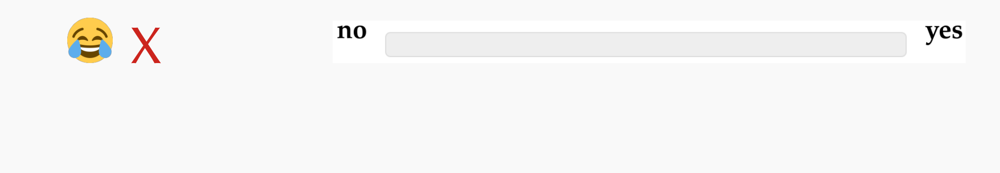
The magician’s assistant won’t admit that they laughed during the trick.
Did the magician’s assistant laugh?
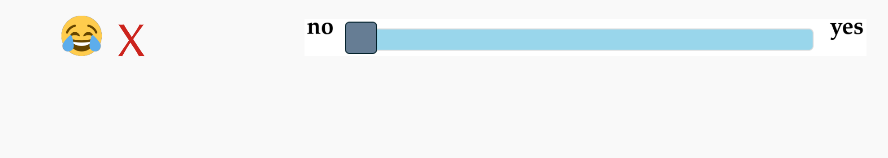
The magician’s assistant won’t admit that they laughed during the trick.
Did the magician’s assistant laugh?
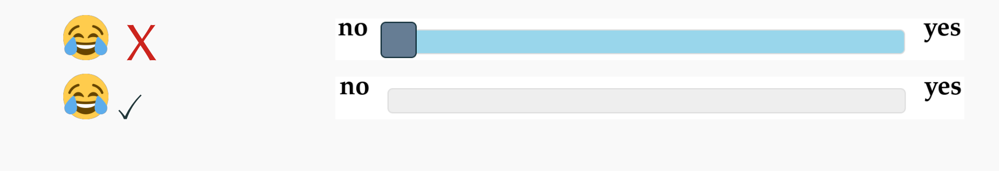
The magician’s assistant won’t admit that they laughed during the trick.
Did the magician’s assistant laugh?
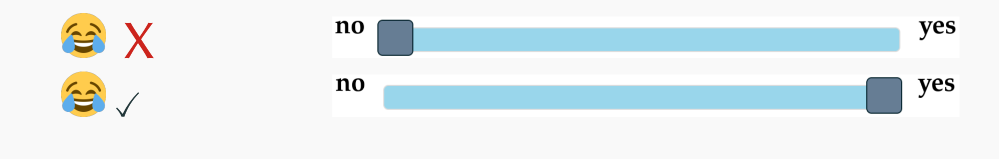
The magician’s assistant won’t admit that they laughed during the trick.
Did the magician’s assistant laugh?
Average response:
The magician’s assistant won’t admit that they laughed during the trick.
Did the magician’s assistant laugh?
Average response:
Multiple factors influence inference judgments:
These can be windows into cognitive processes!
Experimental approaches force explicit theorizing about the following (Jasbi, Waldon, and Degen 2019; Waldon and Degen 2020; Phillips et al. 2021)…
Key insight: linking hypothesis → prediction about response patterns
Striking finding: Pervasive gradient judgments
Understanding gradience crucial for connecting semantics to behavioral data
Large-scale datasets reveal gradience where theory might predict sharper distinctions (White and Rawlins 2018)
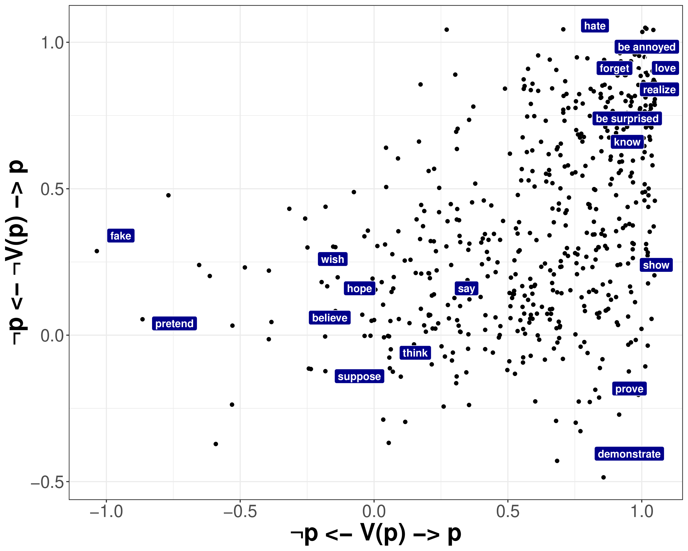
This motivates our taxonomy of uncertainty types…
Two fundamental kinds of sources of gradience:
Sources of Gradience
├── Resolved (Type-Level) Uncertainty
│ ├── Ambiguity
│ │ ├── Lexical (e.g., "run" = locomote vs. manage)
│ │ ├── Syntactic (e.g., attachment ambiguities)
│ │ └── Semantic (e.g., scope ambiguities)
│ └── Discourse Status
│ └── QUD (Question Under Discussion)
└── Unresolved (Token-Level) Uncertainty
├── World knowledge (e.g., likelihood of facts)
└── Task effects
├── Response strategies
└── Response errorMultiple discrete possibilities—speakers choose among interpretations
Example: “My uncle is running the race”
Persists even after fixing all ambiguities
Example: “My uncle is tall”
Another example: even knowing someone runs races, uncertainty about speed, endurance, etc. remains.
Type of uncertainty has profound implications:
Different phenomena may involve different types:
What kind of thing goes where?
\[ \begin{align*} \ct{respond} &: \P σ → (σ → \P (⋄ × \Q ι α σ^{\prime})) → \P ρ \end{align*} \]
\[ \begin{align*} \ct{respond} &: \P σ → (σ → \P (⋄ × \Q ι α σ^{\prime})) → \P ρ \end{align*} \]
\[ \begin{align*} \mathcal{A} &\Coloneqq np ∣ n ∣ s ∣\,\,... \end{align*} \] Noun phrases (\(np\)), nouns (\(n\)), and sentences (\(s\)).
\[ \begin{align*} \mathcal{C}_{\mathcal{A}} &\Coloneqq \mathcal{A} ∣ \mathcal{C}_{\mathcal{A}}/\mathcal{C}_{\mathcal{A}} ∣ \mathcal{C}_{\mathcal{A}}\backslash\mathcal{C}_{\mathcal{A}} \end{align*} \]
An expression:
\[\Large \begin{align*} \expr{\textit{dog}}{λx, i.\ct{dog}(i)(x)}{n} \end{align*} \]
\[ \begin{align*} A \Coloneqq e ∣ t ∣\,\,... \end{align*} \]
\[ \begin{align*} \mathcal{T}_{A} \Coloneqq A ∣ \mathcal{T}_{A} → \mathcal{T}_{A} ∣ \mathcal{T}_{A} × \mathcal{T}_{A} ∣ ⋄ \end{align*} \]
\[ \scriptsize
\begin{array}{c}
\begin{prooftree}
\AxiomC{}
\RightLabel{$\mathtt{Ax}$}\UnaryInfC{$Γ, x : α ⊢ x : α$}
\end{prooftree}
& \begin{prooftree}
\AxiomC{$Γ, x : α ⊢ t : β$}
\RightLabel{${→}\mathtt{I}$}\UnaryInfC{$Γ ⊢ λx.t : α → β$}
\end{prooftree}
& \begin{prooftree}
\AxiomC{$Γ ⊢ t : α → β$}
\AxiomC{$Γ ⊢ u : α$}
\RightLabel{${→}\mathtt{E}$}\BinaryInfC{$Γ ⊢ t(u) : β$}
\end{prooftree} \\[2mm]
\begin{prooftree}
\AxiomC{}
\RightLabel{$⋄\mathtt{I}$}\UnaryInfC{$Γ ⊢ ⋄ : ⋄$}
\end{prooftree}
& \begin{prooftree}
\AxiomC{$Γ ⊢ t : α$}
\AxiomC{$Γ ⊢ u : β$}
\RightLabel{$×\mathtt{I}$}\BinaryInfC{$Γ ⊢ ⟨t, u⟩ : α × β$}
\end{prooftree}
& \begin{prooftree}
\AxiomC{$Γ ⊢ t : α_1 × α_2$}
\RightLabel{$×\mathtt{E}_{j}$}\UnaryInfC{$Γ ⊢ π_{j}(t) : α_{j}$}
\end{prooftree}
\end{array}
\]
\[
\begin{prooftree}
\AxiomC{$Γ ⊢ t : α → β$}
\AxiomC{$Γ ⊢ u : α$}
\RightLabel{${→}\mathtt{E}$}\BinaryInfC{$Γ ⊢ t(u) : β$}
\end{prooftree}
\]
-- | Untyped λ-terms. Types are assigned separately (i.e., "extrinsically").
data Term = Var VarName -- Variables.
| Con Constant -- Constants.
| Lam VarName Term -- Abstractions.
| App Term Term -- Applications.
| TT -- The 0-tuple.
| Pair Term Term -- Pairing.
| Pi1 Term -- First projection.
| Pi2 Term -- Second projection.\[ A \Coloneqq e ∣ t ∣ r ∣\,\,... \]
\[ \mathcal{T}_{A} \Coloneqq A ∣ \mathcal{T}_{A} → \mathcal{T}_{A} ∣ \mathcal{T}_{A} × \mathcal{T}_{A} ∣ ⋄ ∣ \P \mathcal{T}_{A} \]
\[
\begin{array}{c}
\begin{prooftree}
\AxiomC{$Γ ⊢ t : α$}
\RightLabel{$\mathtt{Return}$}\UnaryInfC{$Γ ⊢ \pure{t} : \P α$}
\end{prooftree}
& \begin{prooftree}
\AxiomC{$Γ ⊢ t : \P α$}
\AxiomC{$Γ, x : α ⊢ u : \P β$}
\RightLabel{$\mathtt{Bind}$}\BinaryInfC{$Γ ⊢ \left(\begin{array}{l} x ∼ t \\ u\end{array}\right) : \P β$}
\end{prooftree}
\end{array}
\]
-- | Untyped λ-terms. Types are assigned separately (i.e., "extrinsically").
data Term = Var VarName -- Variables.
| Con Constant -- Constants.
| Lam VarName Term -- Abstractions.
| App Term Term -- Applications.
| TT -- The 0-tuple.
| Pair Term Term -- Pairing.
| Pi1 Term -- First projection.
| Pi2 Term -- Second projection.
| Return Term -- Construct a degenerate distribution.
| Let VarName Term Term -- Sample from a distribution and continue.Let x t u = \(\begin{array}[t]{l}
x ∼ t \\
u
\end{array}\)Return t = \(\pure{t}\)\[ \begin{array}[t]{l} x ∼ \ct{mammal}\\ \pure{\ct{mother}(x)} \end{array} \]
\[ \begin{align*} \ct{observe}\ \ &:\ \ t → \P ⋄ \\ \end{align*} \]
\[ \begin{array}[t]{l} x ∼ \ct{Normal}(0, 1) \\ \ct{observe}(-1 ≤ x ≤ 1) \\ \pure{x} \end{array} \]
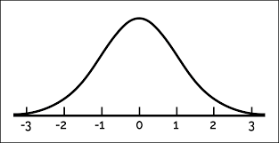
\[ \begin{align*} \ct{observe}\ \ &:\ \ t → \P ⋄ \\ \end{align*} \]
\[ \begin{array}[t]{l} x ∼ \ct{Normal}(0, 1) \\ \ct{observe}(-1 ≤ x ≤ 1) \\ \pure{x} \end{array} \]
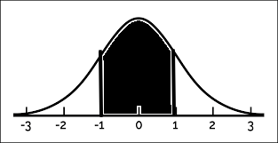
\[ \begin{array}[t]{l} x ∼ \ct{mammal} \\ \ct{observe}(\ct{dog}(x)) \\ \ct{observe}(\ct{friendly}(x)) \\ \pure{\ct{father}(x)} \end{array} \]
\[ \ct{Bernoulli} : r → \P t \]
\[ \begin{array}[t]{l} b ∼ \ct{Bernoulli}(0.5) \\ \ct{observe}(b) \\ \pure{b} \end{array} \]
\[\Large σ → \P (α × σ^{\prime}) \]
\(α\) could be:
\[ \begin{align*} ℙ^{σ}_{σ^{\prime}} α\ \ &=\ \ σ → \P (α × σ^{\prime}) \end{align*} \]
\[ \begin{align*} \return{v}\ \ &=\ \ λs.\pure{⟨v, s⟩} : ℙ^{σ}_{σ} \end{align*} \]
\[ \begin{align*} \begin{array}{rl} \Do & x ← m : ℙ^{σ}_{σ^{\prime}} \\ & k(x) : ℙ^{σ^{\prime}}_{σ^{\prime\prime}} \end{array}\ \ &=\ \ λs.\left(\begin{array}{l} ⟨x, s^{\prime}⟩ ∼ m(s) \\ k(x)(s^{\prime}) \end{array}\right) : ℙ^{σ}_{σ^{\prime\prime}} \end{align*} \]
\(⟦\textit{run}⟧ : ℙ^{σ}_{σ} (e → ι → t)\)
\[ \expr{\textit{run}}{λs.\pure{⟨λx, i.\ct{if\_then\_else}(τ_{\textit{run}}(s))(\ct{run}_{loc.}(i)(x), \ct{run}_{org.}(i)(x)), s⟩}}{s \backslash np} \]
\[ \begin{prooftree} \AxiomC{$\expr{s_{1}}{M_{1}}{b}$} \AxiomC{$\expr{s_{2}}{M_{2}}{c\backslash b}$} \RightLabel{$<$}\BinaryInfC{$\expr{s_{1}\,s_{2}}{ \begin{array}{rl} \Do & m_{1} ← M_{1} \\ & m_{2} ← M_{2}; \\ & \return{m_{2}(m_{1})} \end{array} }{c}$} \end{prooftree} \]
\[\tiny\hspace{-6cm} \begin{prooftree} \AxiomC{$\expr{\textit{a ling.}}{λs.\pure{⟨λi, k.∃x.\ct{ling}(i)(x) ∧ k(i)(x), s⟩}}{s/(s\backslash np)}$} \AxiomC{$\expr{\textit{saw}}{λs.\pure{⟨λi, y, x.\ct{see}(i)(y)(x), s⟩}}{s\backslash np/ np}$} \AxiomC{$\expr{\textit{a phil.}}{λs.\pure{⟨λi, k, x.∃y.\ct{phil}(i)(y) ∧ k(i)(y)(x), s⟩}}{s\backslash np/(s\backslash np/np)}$} \RightLabel{$<$}\BinaryInfC{$\expr{\textit{saw a phil.}}{λs.\pure{⟨λx, i.∃y.\ct{phil}(i)(y) ∧ \ct{see}(i)(y)(x), s⟩}}{s \backslash np}$} \RightLabel{$<$}\BinaryInfC{$\expr{\textit{a linguist saw a philosopher}}{λs.\pure{⟨λi.∃x, y.\ct{ling}(i)(x) ∧ \ct{phil}(i)(y) ∧ \ct{see}(i)(y)(x), s⟩}}{s}$} \end{prooftree} \]
\[ \expr{\textit{a linguist saw a philosopher}}{λs.\pure{⟨λi.∃x, y.\ct{ling}(i)(x) ∧ \ct{phil}(i)(y) ∧ \ct{see}(i)(y)(x), s⟩}}{s} \]
Intensional constants:
\[ \begin{align*} \ct{see} &: ι → e → e → t \\ \ct{ling} &: ι → e → t \end{align*} \]
We require other constants:
\[ \begin{align*} \updct{see} &: (e → e → t) → ι → ι \\ \updct{ling} &: (e → t) → ι → ι \end{align*} \]
\[ \ct{see}(\updct{see}(p)(i)) = p \\ \]
\[ \ct{see}(\updct{ling}(p)(i)) = \ct{see}(i) \]
\[ \ct{ling}(\updct{ling}(p)(i)) = p \\ \]
\[ \ct{ling}(\updct{see}(p)(i)) = \ct{ling}(i) \]
A common ground is a probabilistic program of type \(\P ι\).
\[\ct{@} : ι\]
\[\small \begin{array}[t]{l} h ∼ \abbr{Normal}(0, 1) \\ \pure{\updct{height}(λx.h)(\ct{@})} \end{array} \]
\[\scriptsize \begin{array}[t]{l} h_{j} ∼ \abbr{Normal}(0, 1) \\ h_{b} ∼ \abbr{Normal}(0, 1) \\ \pure{\updct{height}(λx.\ite(x = \ct{j}, h_{j}, h_{b}))(\ct{@})} \end{array} \]
Some state-sensitive constants:
\[ \ct{CG} : σ → \P ι \\ \]
\[ \updct{CG} : \P ι → σ → σ \\ \]
\[ \ct{QUD} : \Q ι α σ → α → ι → t \]
\[ \updct{QUD} : (α → ι → t) → σ → \Q ι α σ \]
\[ \ct{CG}(\updct{CG}(cg)(s)) = cg \]
\[ \begin{align*} \abbr{get} &: ℙ^{σ}_{σ} σ \end{align*} \]
\[ \begin{align*} \abbr{put} &: σ^{\prime} → ℙ^{σ}_{σ^{\prime}} ⋄ \\ \end{align*} \]
\[ \begin{align*} \abbr{assert} &: ℙ^{σ}_{σ^{\prime}} (ι → t) → ℙ^{σ}_{σ^{\prime}} ⋄ \end{align*} \]
\[ \begin{align*} \abbr{assert}(⟦\textit{Jo is tall}⟧) &= \begin{array}[t]{rl} \Do & p^{ι → t} ← ⟦\textit{Jo is tall}⟧^{ℙ^{σ}_{σ} (ι → t)} \\ & s ← \abbr{get} \\ & c ← \return{\ct{CG}(s)} \\ & c^{\prime} ← \return{\left(\begin{array}{l} i ∼ c \\ \ct{observe}(p(i)) \\ \pure{i} \end{array}\right)} \\ & \abbr{put}(\updct{CG}(c^{\prime})(s)) \end{array} \end{align*} \]
\[ \begin{align*} \abbr{ask} &: ℙ^{σ}_{σ^{\prime}} (α → ι → t) → ℙ^{σ}_{\Q ι α σ^{\prime}} ⋄ \end{align*} \]
\[ \begin{align*} \abbr{ask}(⟦\textit{how tall?}⟧) &= \begin{array}[t]{rl} \Do & q^{r → ι → t} ← ⟦\textit{how tall?}⟧^{ℙ^{σ}_{σ}(r → ι → t)} \\ & s ← \abbr{get} \\ & \abbr{put}(\updct{QUD}(q)(s)) \end{array} \end{align*} \]
\[ \begin{align*} \abbr{respond}^{f_Φ : r → \P ρ} &: \P σ → ℙ^{σ}_{\Q ι r σ^{\prime}} ⋄ → \P ρ \end{align*} \]
\[ \begin{align*} &\abbr{respond}^{f_Φ : r → \P ρ}(prior)(discourse) \\[5mm] &= \begin{array}[t]{l} s ∼ prior \\ ⟨⋄, s^{\prime}⟩ ∼ discourse(s)\\ i ∼ \ct{CG}(s^{\prime}) \\ f(\ct{max}(λd.\ct{QUD}(s^{\prime})(d)(i)), Φ) \end{array} \end{align*} \]
\[ \begin{align*} \abbr{respond}^{f_Φ : r → \P ρ} &: \P σ → ℙ^{σ}_{\Q ι r σ^{\prime}} ⋄ → \P ρ \end{align*} \]
\[ \abbr{respond}^{λx.\ct{Normal}(x, 1)}(prior)\left( \begin{array}{rl} \Do & \abbr{assert}(⟦\textit{Jo is tall}⟧) \\ & \abbr{ask}(⟦\textit{how tall?}⟧) \end{array} \right) \]
Factivity presents a puzzle.
Factive:
Non-factive:
MegaVeridicality dataset (White and Rawlins (2018)): continuous gradient, not discrete clusters
There are two importantly distinct questions that we need to disentangle:
We’ll focus on the latter question—PDS is uniquely positioned to ask it
Judgments about certainty depend on:
Degen and Tonhauser (2021) developed a two-stage design to tease these apart
Measure world knowledge independent of embedding predicates:
impossible \(\hspace{17cm}\) definitely
Created high/low likelihood contexts for each proposition
Embed propositions under predicates, ask about speaker certainty:
no \(\hspace{23cm}\) yes
20 predicates spanning theoretical categories:
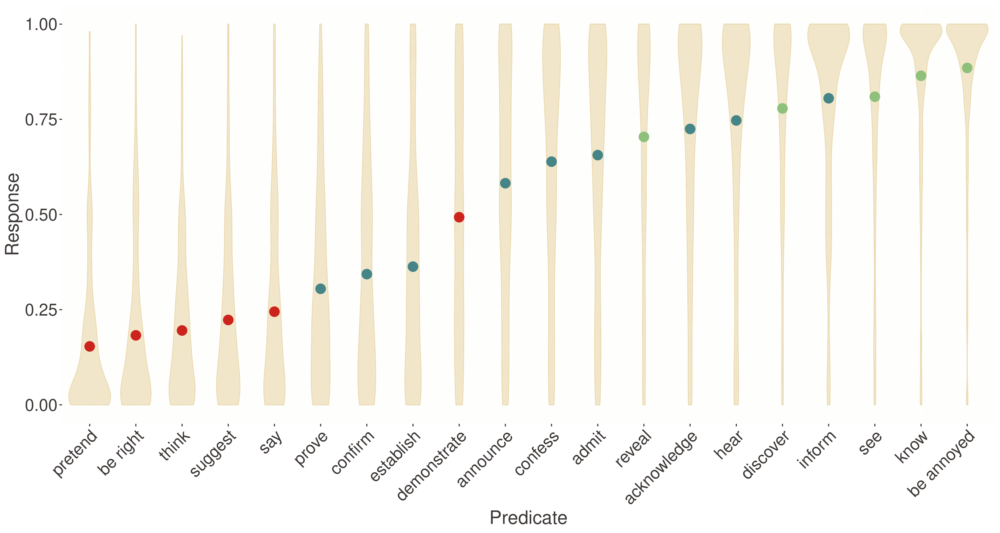
Continuous gradient of projection behavior
Norming data: fit a discrete model and gradient model…
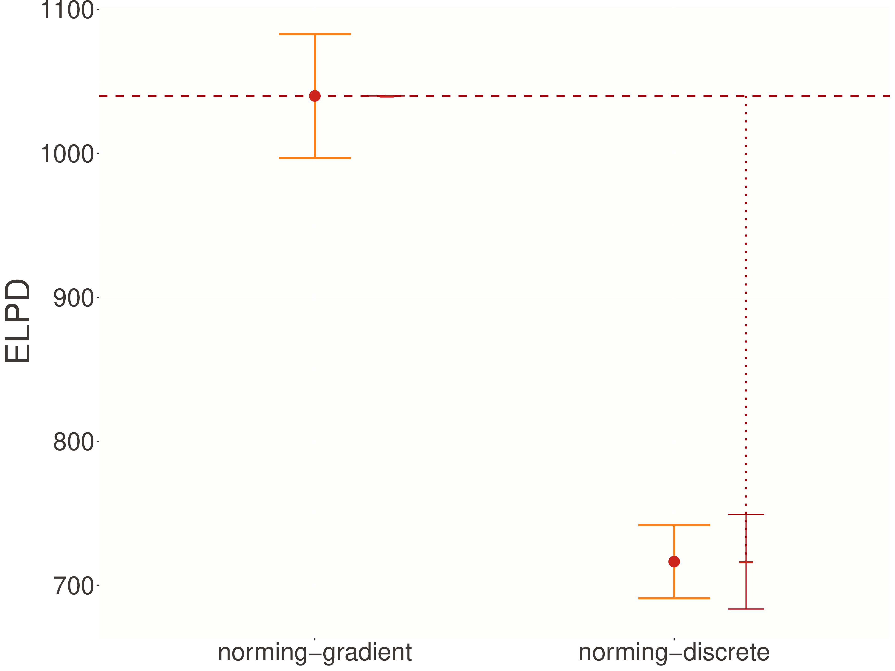
Gradient model better (ΔELPD = 442.3)!
ITE creates discrete choice based on TauKnow parameter
-- From Grammar.Parser and Grammar.Lexica.SynSem.Factivity
expr1 = ["jo", "knows", "that", "bo", "is", "a", "linguist"]
expr2 = ["how", "likely", "that", "bo", "is", "a", "linguist"]
s1 = getSemantics @Factivity 0 expr1
q1 = getSemantics @Factivity 0 expr2
discourse = ty tau $ assert s1 >>> ask q1
-- Compile to Stan using factivityPrior and factivityRespond
factivityExample = asTyped tau (betaDeltaNormal deltaRules . factivityRespond factivityPrior) discourse…transforms compositional semantics into Stan kernel models (models representing a single trial).
PDS outputs this kernel model:
model {
// FIXED EFFECTS
v ~ logit_normal(0.0, 1.0); // probability of factive interpretation
w ~ logit_normal(0.0, 1.0); // world knowledge (from norming)
// LIKELIHOOD
target += log_mix(v,
truncated_normal_lpdf(y | 1.0, sigma, 0.0, 1.0), // factive branch
truncated_normal_lpdf(y | w, sigma, 0.0, 1.0)); // non-factive branch
}This captures discrete branching: with probability v, response is near 1.0; otherwise, it depends on world knowledge w
Key factivity-specific components:
model {
// ... priors and hierarchical structure ...
for (n in 1:N) {
// Probability of factive interpretation
real verb_prob = inv_logit(verb_intercept[verb[n]] +
subj_intercept_verb[subj[n], verb[n]]);
// World knowledge probability
real context_prob = inv_logit(context_intercept[context[n]] +
subj_intercept_context[subj[n], context[n]]);
// MIXTURE LIKELIHOOD
target += log_mix(verb_prob,
truncated_normal_lpdf(y[n] | 1.0, sigma_e, 0.0, 1.0),
truncated_normal_lpdf(y[n] | context_prob, sigma_e, 0.0, 1.0));
}
}The kernel is augmented with statistical machinery for real data:
mu_omega and sigma_omega from norming studyAlternative lexical entry branches on common ground indices:
Now TauKnow parameter varies by index rather than discourse state
The alternative implementation requires different prior structure:
Bernoulli statement regulating factivity is part of the common ground definition
Continuous computation: response = v + (1-v) * w
Let’s trace through this computation:
v = 0 (no factivity): response = 0 + 1 * w = w (pure world knowledge)v = 1 (full factivity): response = 1 + 0 * w = 1 (certain)v = 0.5 (partial factivity): response = 0.5 + 0.5 * w (boosted world knowledge)This provides a “boost” to world knowledge but never forces certainty
Both models require modifications to handle factivity parameters:
Discrete model: TauKnow varies by discourse state
Gradient model: TauKnow varies by common ground indices
We also consider two models created by directly manipulating Stan code:
Both factivity and world knowledge are discrete
World knowledge discrete, factivity gradient
These serve as computational experiments but don’t correspond to theoretical proposals
Four models tested:
PDS derives the first two from theoretical commitments; the others are computational experiments
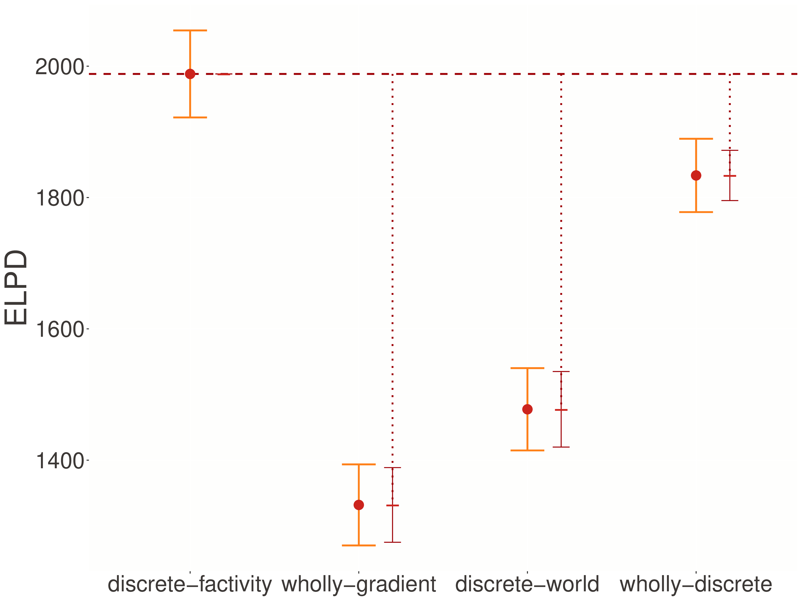
Discrete-factivity dramatically outperforms alternatives
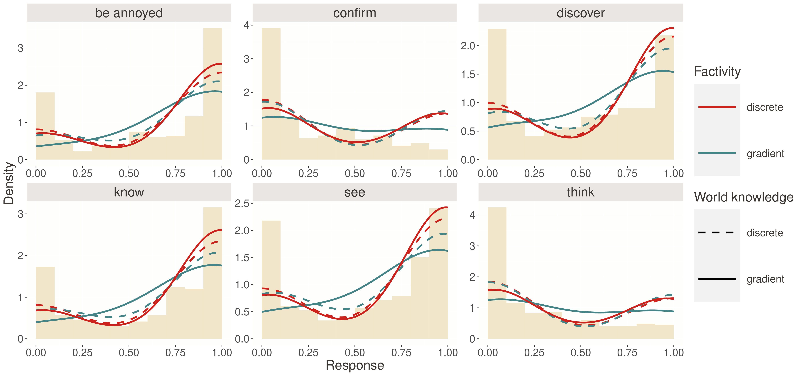
How well do models capture response distributions?
Discrete-factivity captures characteristic dips mid-scale—mixture of factive (≈1) and non-factive (varies) interpretations
The discrete-factivity model captures non-monotonic response patterns:
Wholly-gradient model produces smooth, unimodal distributions—missing the bimodality
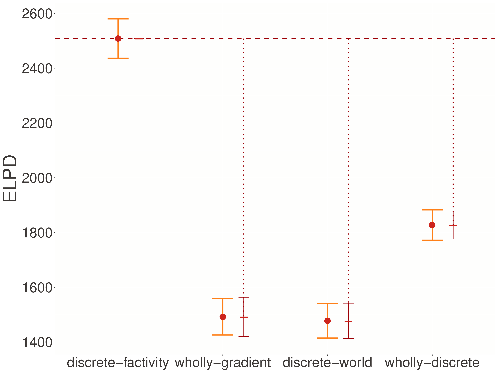
Pattern holds even with anti-veridicality component
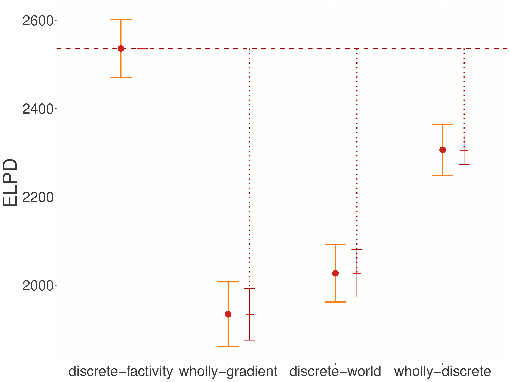
Discrete-factivity advantage persists in replication
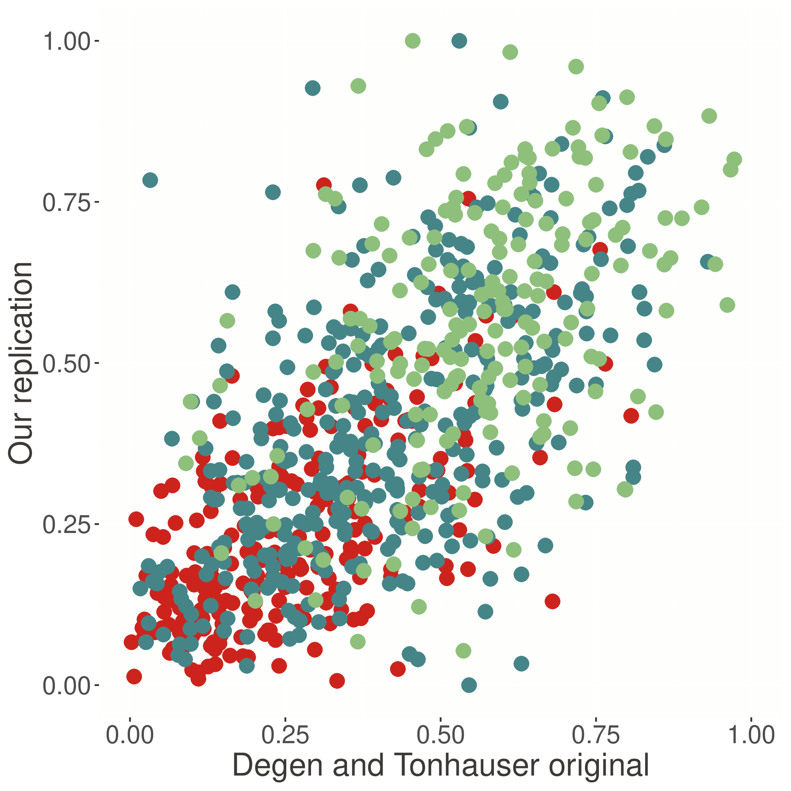
Near-perfect correlation at verb level (r = 0.98)
Test with minimal contexts:
Bleached: “a particular thing happened”
Templatic: “X happened”
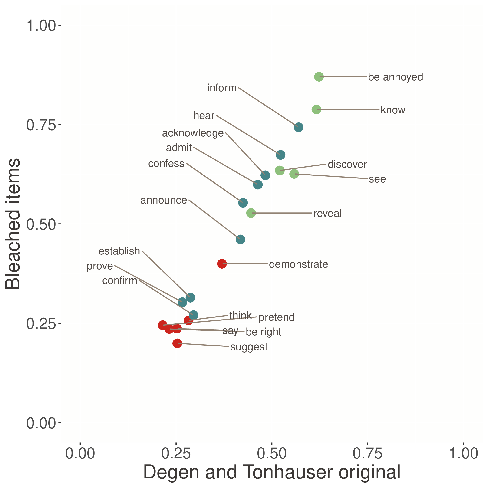
Factivity patterns persist even without rich content!
The norming study reveals how world knowledge varies:
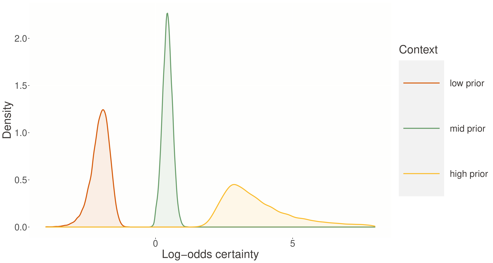
Clear separation between high/low prior contexts validates experimental manipulation
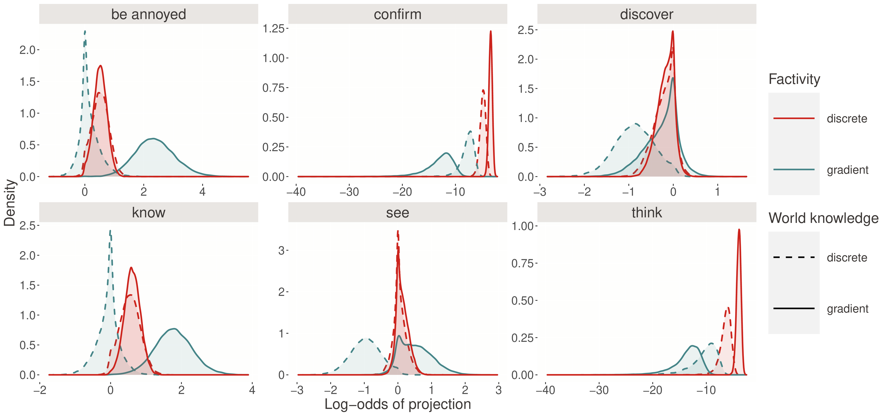
Variation in propensity to trigger factive interpretations
Key insight: Canonical factives (know, discover) show high probability; variable predicates (confirm, prove) show intermediate probabilities with high uncertainty
Click to see all 20 predicates
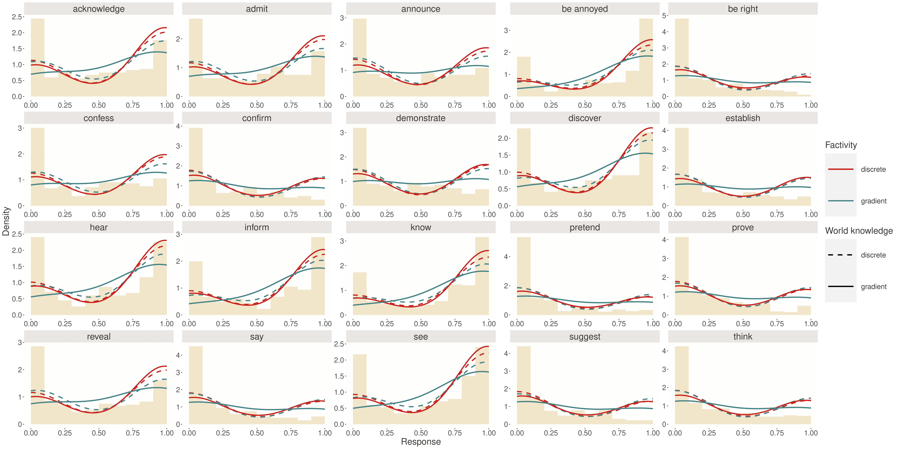
Posterior predictive distributions for all predicates
In mixture models, components can sometimes “trade off”—different parameter combinations yield identical predictions.
Solutions: - Informative priors using norming data to constrain world knowledge parameters - Hierarchical structure with partial pooling across predicates and contexts - Multiple contexts per predicate
Mixture models can be slow to fit or fail to converge.
Improvements: - Non-centered parameterizations (as shown in transformed parameters blocks) - Vectorization (operating on arrays rather than loops where possible)
- Warm starts (initializing chains near reasonable values)
Beyond posterior predictive checks:
To ensure robustness, we tested ordered beta distributions:
Robustness to response distribution choice
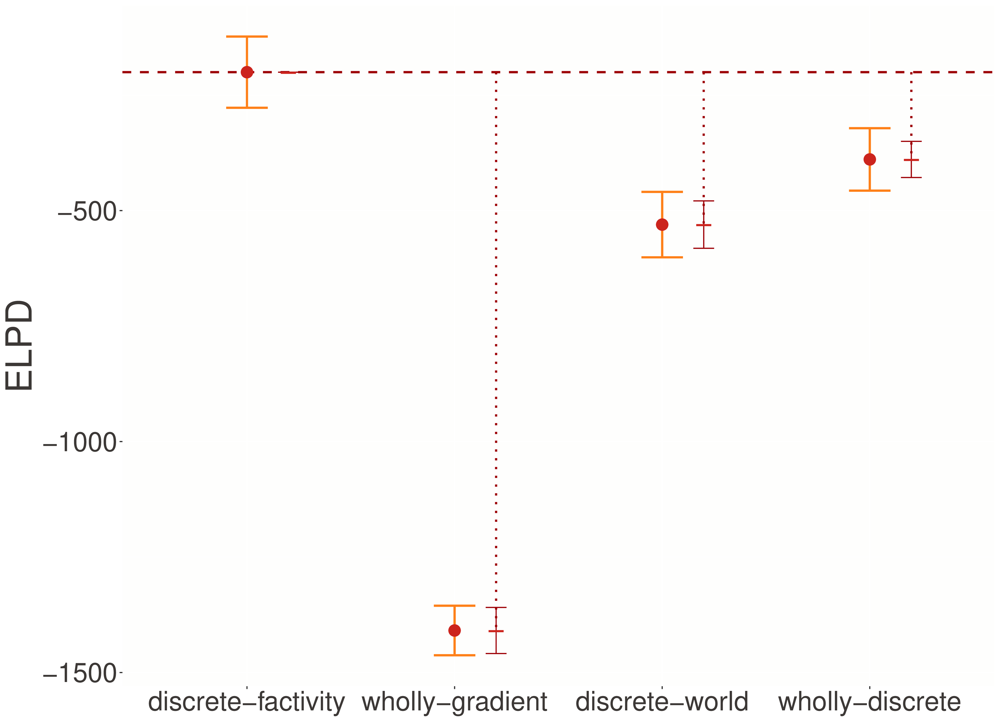
Left: ELPDs for ordered beta models. Right: Truncated normal vs. ordered beta comparison
Discrete-factivity maintains advantage regardless of response distribution
Whether QUD-based, at-issueness, or commitment-based:
Implication: Projection mechanisms involve binary operations, not continuous scales
Adjectives: - Gradient uncertainty from vagueness - Unresolved indeterminacy - Continuous threshold parameters
Factivity: - Discrete uncertainty from interpretation - Resolved indeterminacy
- Mixture model components
PDS compilation naturally reflects these theoretical distinctions
Discrete-factivity models dramatically outperform gradient alternatives
Factivity involves categorical interpretation selection
PDS enables principled theory comparison through compositional semantics → statistical models
The framework provides a template for investigating similar questions across semantic phenomena
The broader vision: Probabilistic semantics as a bridge between theoretical linguistics and computational modeling
Questions and discussion…
PDS: intro., factivity, and some code